Speed to Lead System
Chaque demande mérite une réponse.
Capture des leads, réponse rapide et relances centralisées pour faciliter le suivi commercial.
Impact recherché Moins de demandes sans réponse, plus d’opportunités de vente.
Des systèmes pour capter les opportunités, automatiser vos
opérations et accompagner votre croissance.
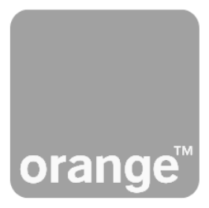
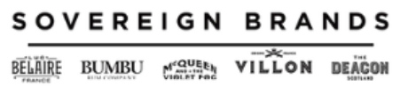
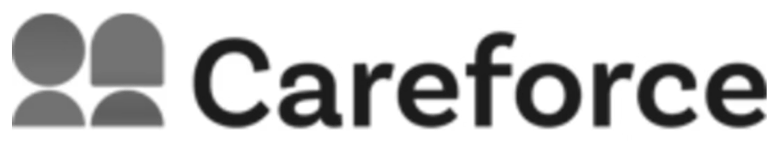
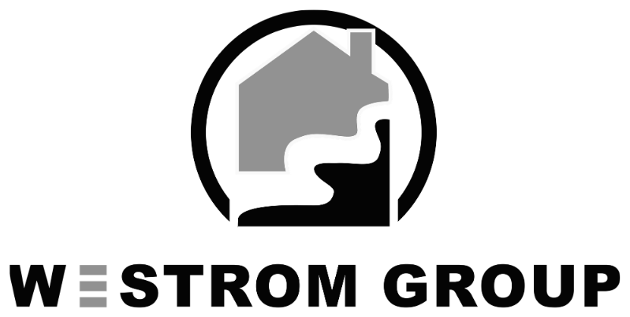
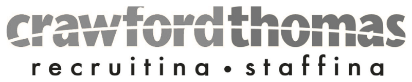
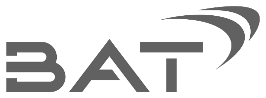
Nous construisons avec votre stack
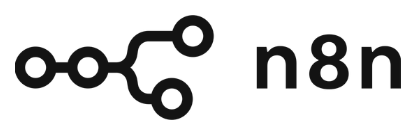
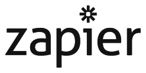
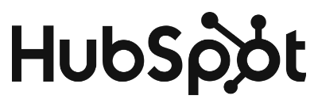
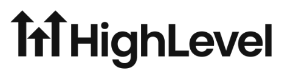
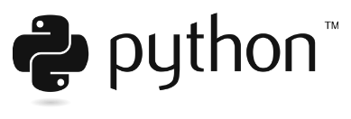
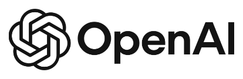
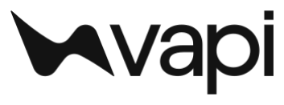
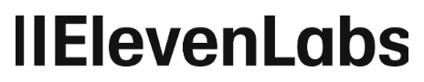
À travers diverses industries.
Voir les projetsQuelques projets issus de notre parcours, de la prospection au pilotage des opérations.
Speed to Lead System
Capture des leads, réponse rapide et relances centralisées pour faciliter le suivi commercial.
Impact recherché Moins de demandes sans réponse, plus d’opportunités de vente.
Optimisation & automatisation CRM
Contacts centralisés, pipeline structuré et relances reliées aux étapes du parcours client.
Impact recherché Moins d’opportunités oubliées, plus de chances de convertir.
Laboratoire cosmétique
Visites commerciales, stocks, précommandes et reporting réunis dans les outils utilisés au quotidien.
Impact Les remises de fin d’année traitées en un jour, au lieu d’une semaine.
Acquisition B2B
Identification des entreprises, recherche des décideurs, personnalisation et suivi des réponses.
Impact recherché Alimenter le pipeline en opportunités commerciales pertinentes.
Orange · expérience en entreprise
Consolidation des données marketing de plusieurs marchés dans un tableau de bord quotidien.
Impact 952 heures de travail manuel automatisées sur la chaîne de reporting.
Andy Guitteaud Fondateur de GingerClick
Votre interlocuteur
Je suis Andy Guitteaud, basé à Fort-de-France. Mon parcours relie le marketing, l'acquisition B2B et l'automatisation.
Je pars de votre façon de travailler pour construire les outils qui vous manquent : capter les demandes, suivre les prospects, relier les données et simplifier les opérations.
Échangeons sur votre projetLe livrable, le calendrier et le prix sont définis avant de commencer.
Le système s'appuie sur votre environnement. Vous gardez la main sur vos données.
Les parcours sont testés et le résultat est contrôlé avant la mise en service.
La maintenance et les évolutions sont cadrées selon vos besoins, dans un périmètre convenu.
On commence par le point qui freine votre activité. Puis on construit le système autour.
Relier vos outils, vos processus et vos données dans un ensemble cohérent, qui évolue avec votre activité.
Présenter votre offre et recueillir les demandes dans un parcours lisible.
Identifier les bonnes entreprises, organiser les contacts et suivre les relances.
Relier vos outils, réduire les manipulations et rendre vos données exploitables.
Comprendre votre activité
et vos priorités.
Définir le système, le périmètre et le calendrier.
Développer, tester et
mettre en service.
Faire évoluer le système
avec votre croissance.
Un premier échange pour comprendre votre activité
et identifier ce qui mérite d'être construit.